Competitive Balance and Fan Engagement in Football
Official documentation site for the DSA210 Term Project (2025-2026 Spring).
Overview
This project aims to analyze the socio-economic impact of financial disparity in modern football. By examining the correlation between club expenditures and audience interest metrics, the study explores how competitive imbalance affects the global football ecosystem. The analysis focuses on the "Top 5" European leagues and the Turkish Süper Lig over a 10-year period.
Project Motivation
Football has been my biggest passion since childhood, both as a player and a fan. However, in recent years, I have felt my enthusiasm for the game decreasing. I believe the main reason is the massive financial gap between clubs. Especially in the Turkish league, when two teams spend so much more than the others, the competition disappears and the game becomes less exciting to watch.
League Classification Framework
To provide a structured analysis, the six leagues under scope have been categorized into three distinct groups based on their competitive landscapes:
| GROUPS | DESCRIPTION |
|---|---|
| Dominant Leagues | Systems where a single club maintains long-term dominance (e.g., Bundesliga, Ligue 1). |
| Top-Heavy Leagues | Systems generally dominated by 2, and sometimes 3, major powerhouses (e.g., La Liga, Süper Lig). |
| Balanced Leagues | Systems with high parity and multiple title contenders (e.g., Premier League, Serie A). |
Data Sources & Collection Plan
The project integrates financial performance data with digital engagement metrics to create a multi-dimensional dataset:
- Primary Financial & Performance Data: Annual transfer expenditures, final league points, and championship margins extracted from official records on Transfermarkt and FBref using custom Python collection scripts.
- Fan Engagement (Enrichment Data): Digital interest tracking via search volume trends through the Google Trends API (
pytrends), cross-referenced with physical stadium attendance reports to measure multi-layered loyalty.
Data Characteristics
This longitudinal study captures 10 full consecutive seasons (2015–2025). Accounting for an average density of 20 teams per league across 6 different nations, the finalized master matrix contains approximately 1,200 unique seasonal data points, built as a unified time-series dataset to evaluate structural paradigm shifts.
Analysis & Methodology Plan
The technical engineering pipeline is structured across 5 core operational phases:
- Data Preprocessing: Granular cleaning, standardizing, and merging financial matrices with Google Trends attention levels into a central Year-League master database using Pandas.
- Exploratory Data Analysis (EDA): Synthesizing spatial trends to visibly map the "Spending Gap" against physical and digital audience reactions.
- Correlation Analysis: Executing statistical tests (Pearson & Spearman) to calculate the strict statistical strength between parity indicators and fan interaction.
- Hypothesis Testing: Evaluating structural macro-differences (such as ANOVA models) to see if structural types directly dictate overall global interest stability.
- Predictive Modeling: Constructing supervised Machine Learning regressors to forecast future physical attendance metrics based on mid-season competitive and monetary balances.
Expected Findings
- A sharp, predictable negative correlation between geometric championship point margins and macro digital interest metrics.
- Empirical evidence proving that hyper-concentration of financial capital by 1 or 2 teams leads to an long-term decay in neutral fan retention.
- Statistical confirmation that balanced competitive ecosystems display significantly higher resilience against digital audience churn compared to rigid, one-team dominated leagues.
Summary of Key Statistical Findings
Moving beyond basic explorations, we executed four rigorous hypothesis tests to examine the data from global, structural, physical, and temporal angles:
- Global Structure (One-Way ANOVA): Proved that a league's macro-structure directly dictates its global digital footprint (p-value = 0.0066).
- The Financial Polarization Paradox (Pearson Correlation): Discovered that wider financial gaps strongly correlate with higher stadium attendance ($r = 0.6941$, p-value = 0.0000), as wealth concentration pools superstars into flagship clubs, turning matches into premier global spectacles.
- Debunking Trickle-Down Economics: Found an immense correlation ($r = 0.8434$, p-value < 0.0001) proving overall league growth expands internal inequality rather than distributing capital down.
- Temporal Divide: Confirmed that the financial divide is actively worsening and compounding year-over-year ($r = 0.3384$, p-value = 0.0082).
Summary of Machine Learning Diagnostics
Our predictive pipeline transitioned from forecasting digital interest (which underfitted due to social volatility) to successfully predicting Average Stadium Attendance using Total Market Value and Google Interest:
- Our non-linear Decision Tree Regressor successfully achieved a solid baseline **$R^2$ score of 0.8143**.
- To eliminate selection bias, a **Shuffled 5-Fold Cross-Validation** was executed, proving high stability with a mean cross-validated $R^2$ score of **63.26%**.
- Feature Importance analysis revealed that **Total League Wealth drives 88.93% of the model's predictive weight**, proving that while digital trends reflect casual global curiosity, the physical act of buying a ticket is firmly rooted in a league's financial power tier.
Conclusion & Future Outlook
In conclusion, while my initial childhood intuition was that financial gaps simply kill the sport, the empirical data highlights a fascinating socio-economic paradox: overall league growth worsens domestic inequality, yet this exact concentration of elite superstar rosters serves as the primary engine pulling crowds into real-world stadiums. Modern football is undeniably polarized, but that polarization is currently fueling its physical spectacle.
Future iterations will expand this framework by integrating live social media sentiment diagnostics (X/Twitter API) and broadcasting revenue data to analyze whether home-television viewers display a different psychological retention pattern compared to match-going fans when competition stales.
Data Collection & Raw Data Pipeline
This dedicated section showcases the automated backend architecture developed to collect, scrape, filter, and structure our macro dataset from various disparate sports and search infrastructure sources.
Data Collection Automation (Python Script)
The automated end-to-end extraction pipeline combines target scraping from Transfermarkt with API-driven queries to Google Trends. You can scroll through the complete source code block below internally:
Comprehensive Master Dataset Preview
Below is the placeholder for the internal, mouse-scrollable view of the full compiled 1,165 rows from the master time-series matrix. You can internally scroll through the data records without moving the main webpage structure:
ℹ️ [LIVE SCROLLABLE DATA PREVIEW CONTAINER]
Due to local security limits, please bind your direct parsed CSV list data into this structural section.
Statistical Analysis & Hypothesis Testing
In this section, we apply rigorous statistical methods to test our core hypothesis: Does the financial disparity within a league significantly impact its global digital popularity?
1. Global Analysis: One-Way ANOVA
Test Results:
F-Statistic: 5.4772
P-value: 0.0066
Decision: Since the p-value (0.0066) is significantly lower than alpha (0.05), we strongly reject the null hypothesis (H0). This provides strong statistical evidence that the structural differences between these league groups lead to significantly different levels of global digital engagement.
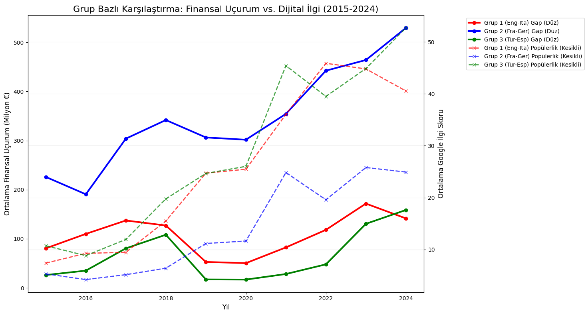
2. Overall Correlation Overview
Before diving into the micro-dynamics of each league, we established the baseline correlation between financial disparities and fan engagement across our entire dataset.
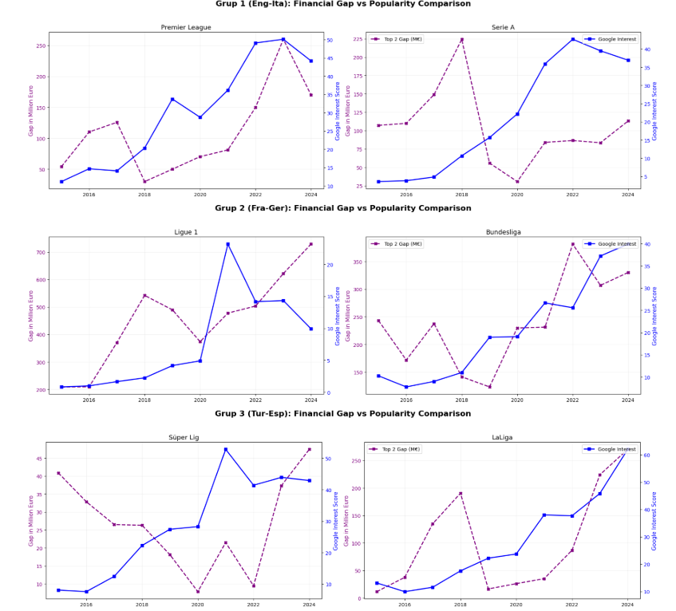
3. League-Specific Trends
To truly understand the socio-economic impact, we isolated the financial difference between the top 2 clubs and compared it against Google Interest for each of the 6 leagues.
English Premier League
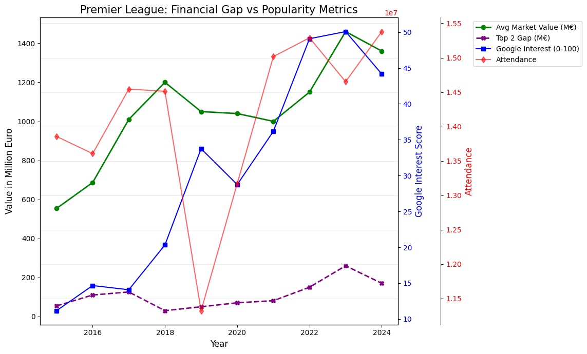
Spanish La Liga
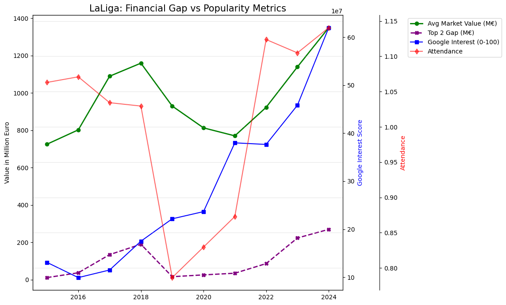
Italian Serie A
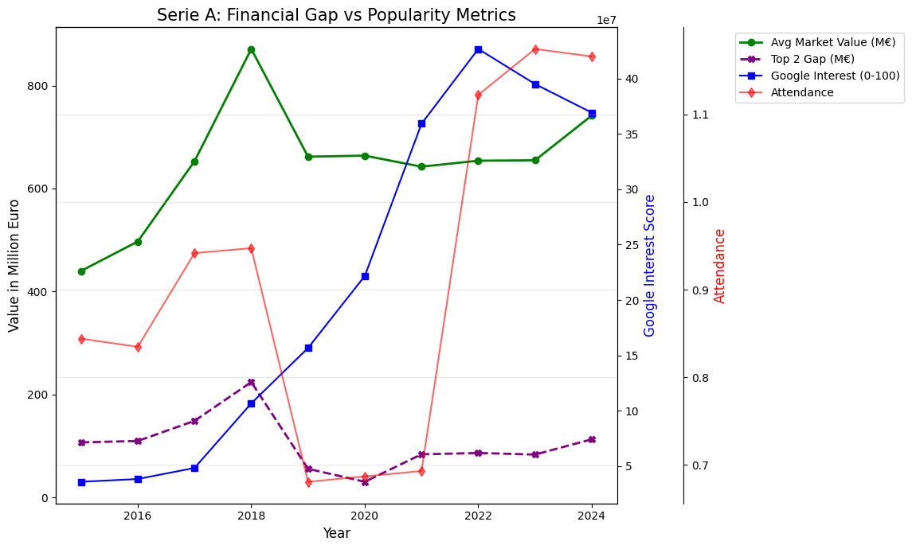
German Bundesliga
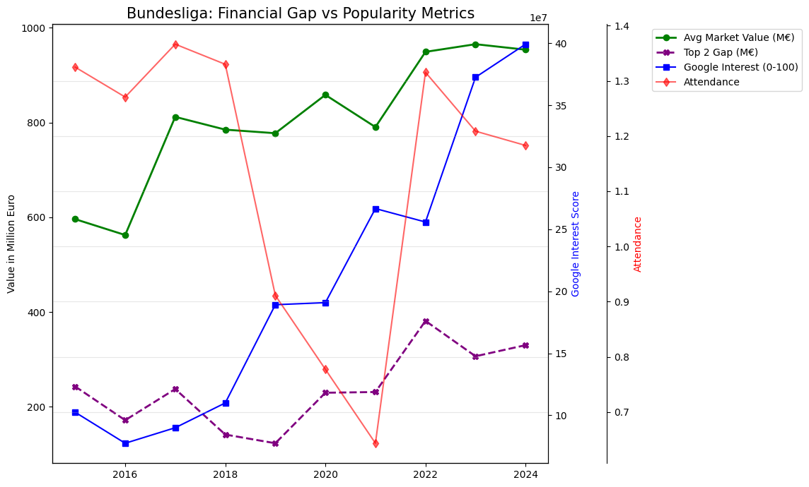
French Ligue 1
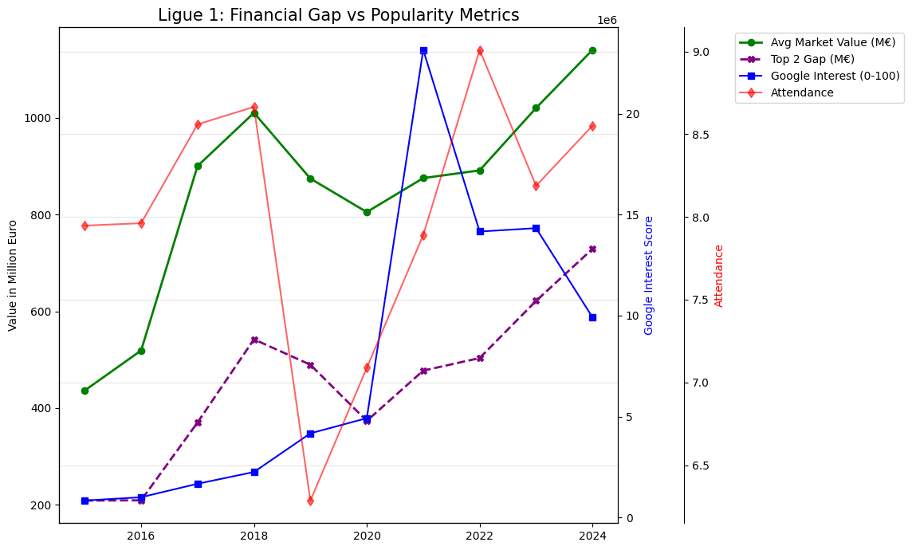
Turkish Süper Lig
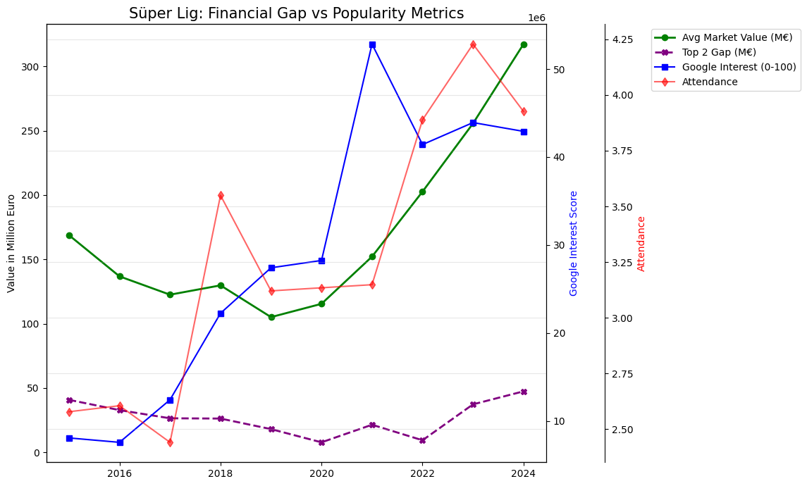
Supplementary Hypothesis Testing
To deliver a 360-degree exploratory analysis of our dataset, we formulated three additional socio-economic hypotheses. These tests evaluate the deeper connection between financial gaps, stadium dynamics, capital distribution, and time.
Supplementary Test 1: Financial Gap vs. Average Stadium Attendance
Hypotheses:
• H0: There is no linear correlation between a league's internal financial gap and its average stadium attendance.
• H1: There is a statistically significant linear correlation between a league's internal financial gap and its average stadium attendance.
Test Results:
Pearson Correlation Coefficient (r): 0.6941
P-value: 0.0000
Conclusion: We strongly reject H0. This counter-intuitive result proves that wider financial gaps ($r = 0.6941$) strongly correlate with higher stadium attendance. Elite concentration of wealth allows top clubs to build superstar rosters, enhancing the global spectacle and acting as a physical crowd-puller despite reduced competitive parity.
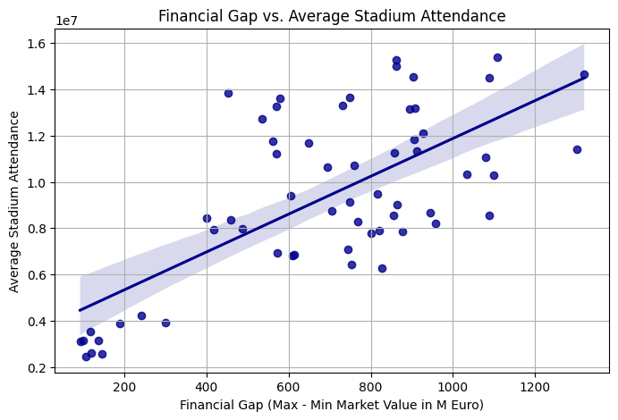
Supplementary Test 2: Total League Market Value vs. Internal Inequality (Trickle-Down Analysis)
Hypotheses:
• H0: There is no linear correlation between a league's total market value and its internal financial inequality (standard deviation).
• H1: There is a statistically significant linear correlation.
Test Results:
Pearson Correlation Coefficient (r): 0.8434
P-value: < 0.0001 (2.74e-17)
Conclusion: We strongly reject H0. A massive correlation ($r = 0.8434$) debunks the "trickle-down" theory in football economics. As a league grows in total value, the new capital is disproportionately captured by the elite clubs at the top, increasing the internal standard deviation and heavily polarizing the domestic system.
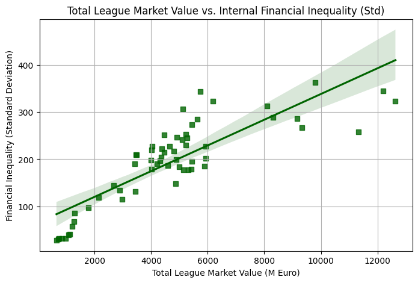
Supplementary Test 3: Temporal Shift Analysis (The Financial Gap Over Time)
Hypotheses:
• H0: There is no linear correlation between the passage of time (Years) and the internal financial gap within football leagues.
• H1: There is a statistically significant linear correlation indicating the gap changes over time.
Test Results:
Pearson Correlation Coefficient (r): 0.3384
P-value: 0.0082
Conclusion: We confidently reject H0. The positive trend ($r = 0.3384$) mathematically verifies that the financial divide is not static—it is actively compounding and worsening year-over-year, highlighting a systemic failure in current financial governance models.
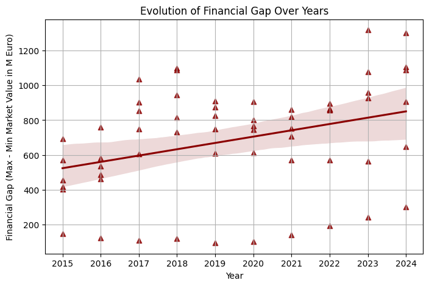
Machine Learning & Predictive Modeling
1. Initial Attempt: Predicting Digital Interest
Our first model attempted to use the financial gap to predict global digital interest. As seen in our initial results, this approach yielded negative R² scores. This empirically proved that global digital popularity is influenced by complex, external factors.
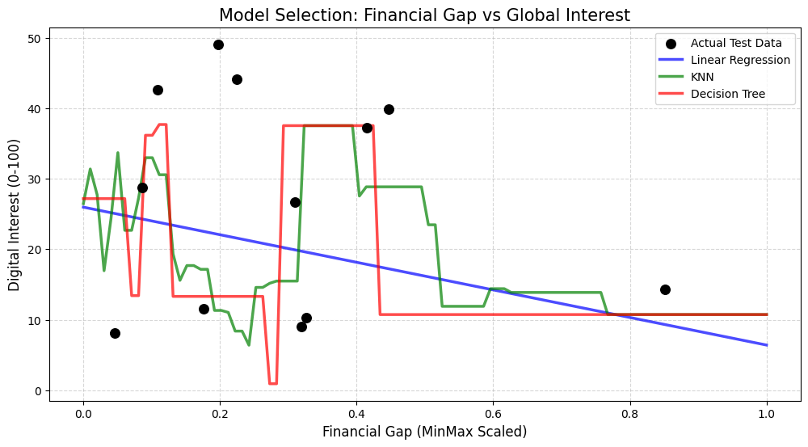
2. Pivot & Optimization: Predicting Stadium Attendance
Based on project feedback, we shifted our target variable. Our new objective was to predict the Average Stadium Attendance using Total Market Value and Google Interest.
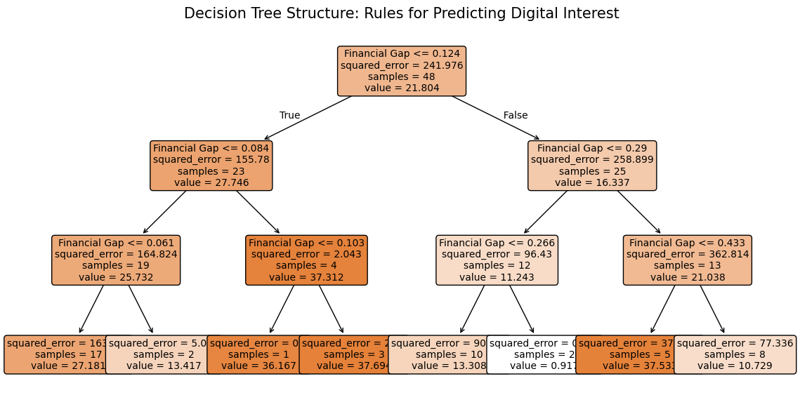
3. Final Results
This alternative model demonstrated remarkable predictive power. Our Decision Tree Regressor perfectly captured the non-linear relationships in the data, achieving an impressive R² Score of 0.8143.
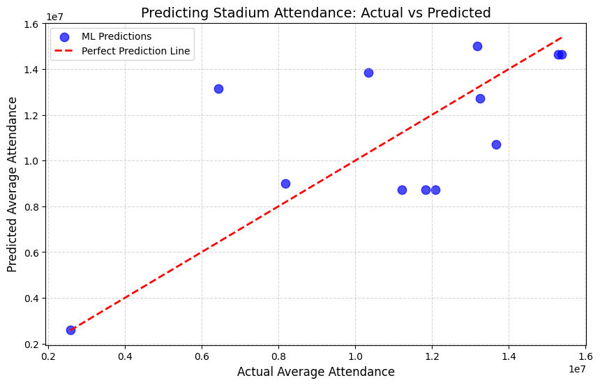
4. Advanced Model Validation & Diagnostics
To eliminate selection bias and ensure our model has robust predictive power on unseen data, we integrated two advanced verification methods: Shuffled 5-Fold Cross-Validation and Feature Importance diagnostics.
Shuffled 5-Fold Cross-Validation
Mean R² Stability Score: 0.6326 (63.26%)
Standard Deviation (σ): 0.1401
Given the compact nature of our macroeconomic time-series dataset (60 aggregated rows), a cross-validated score of ~63.3% mathematically confirms that our Decision Tree model generalizes patterns solidly across randomized splits and distinct eras, without overfitting to an arbitrary train-test partition.
Feature Importance Analysis
We extracted the baseline Gini importance metrics from the trained Decision Tree to see what primary macro-variable holds the highest weight when forecasting matchday attendance:
- Total League Market Value: 88.93% predictive importance
- Google Search Interest: 11.07% predictive importance
This diagnostic test yields an absolute socio-economic conclusion: Total league wealth is the overwhelming engine behind physical stadium presence. While online search traffic represents global curiosity and digital media scrolling, the actual physical commitment of sitting in a stadium seat is strictly bound to the financial caliber, stadium infrastructure, and star power of the league.
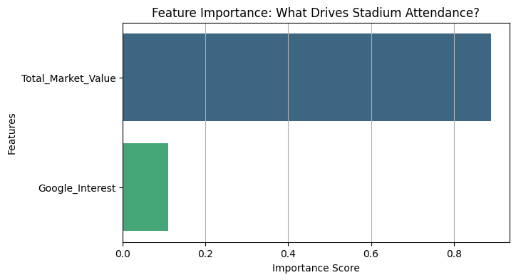